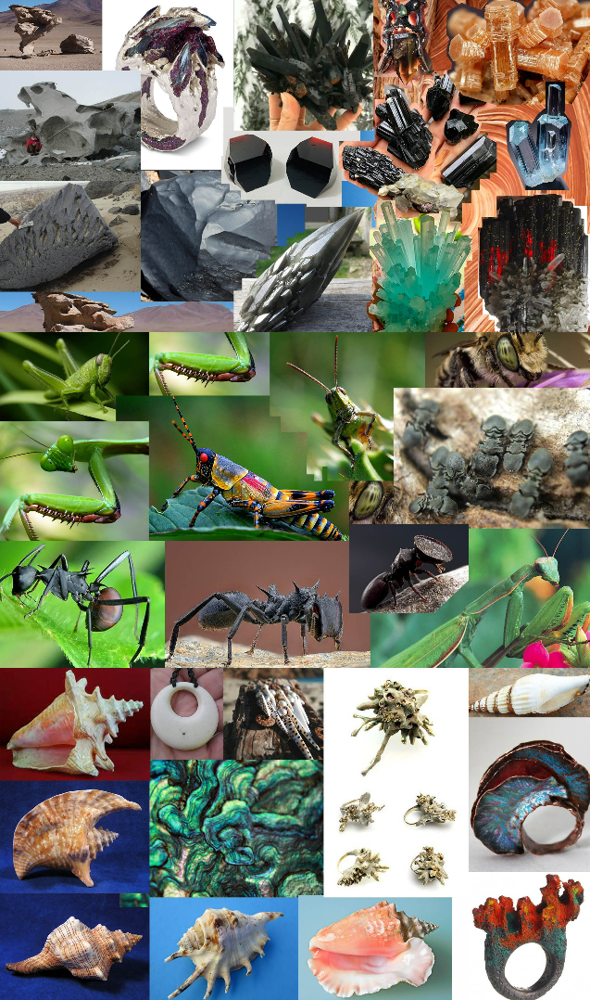
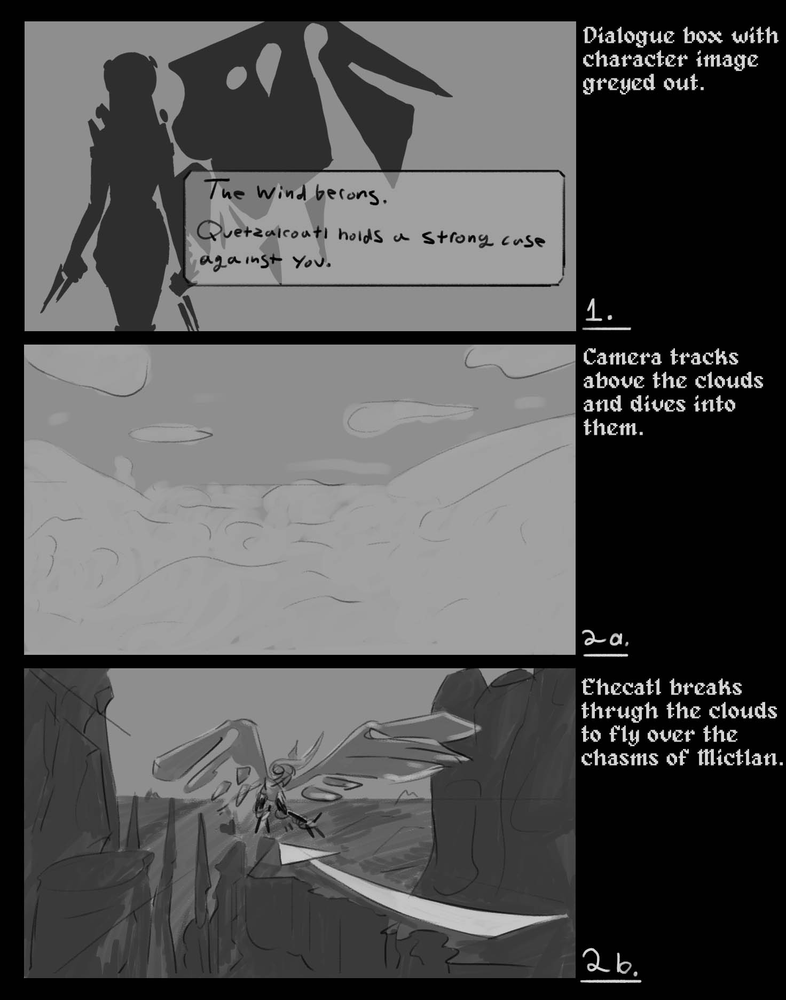
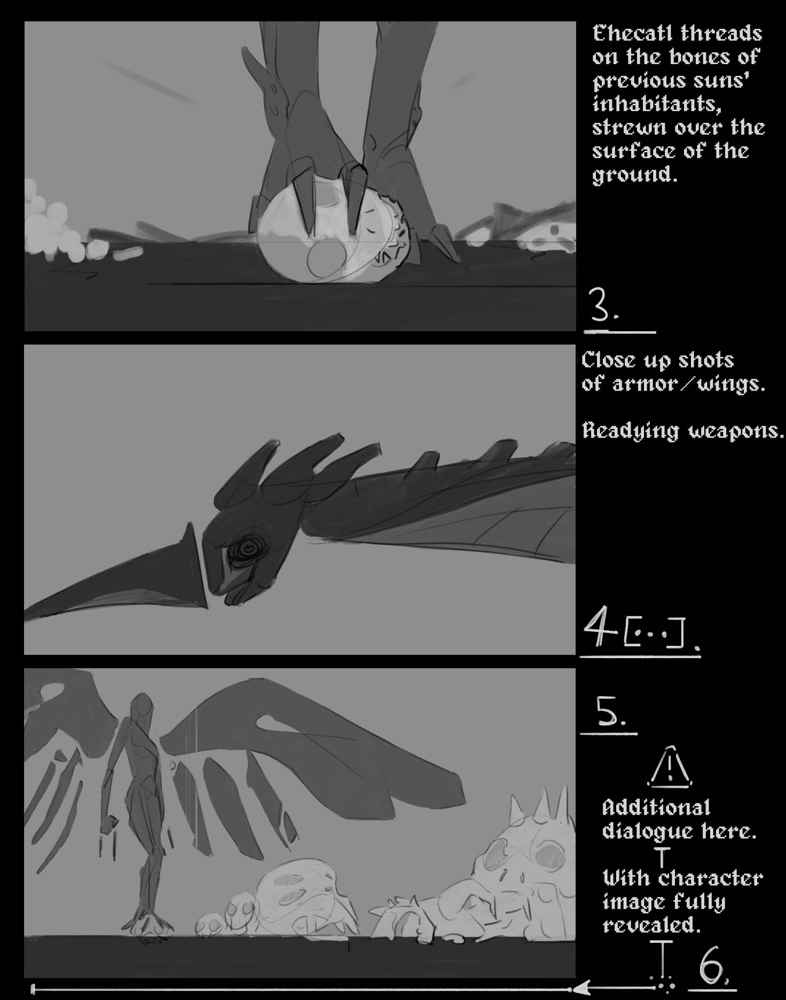
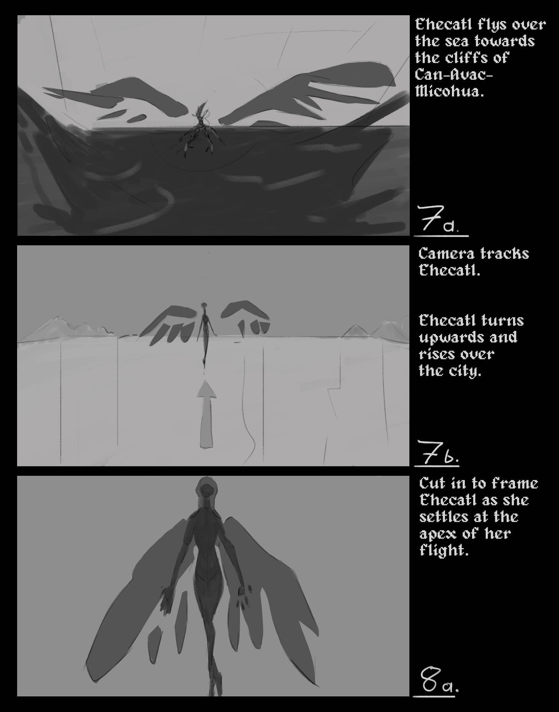
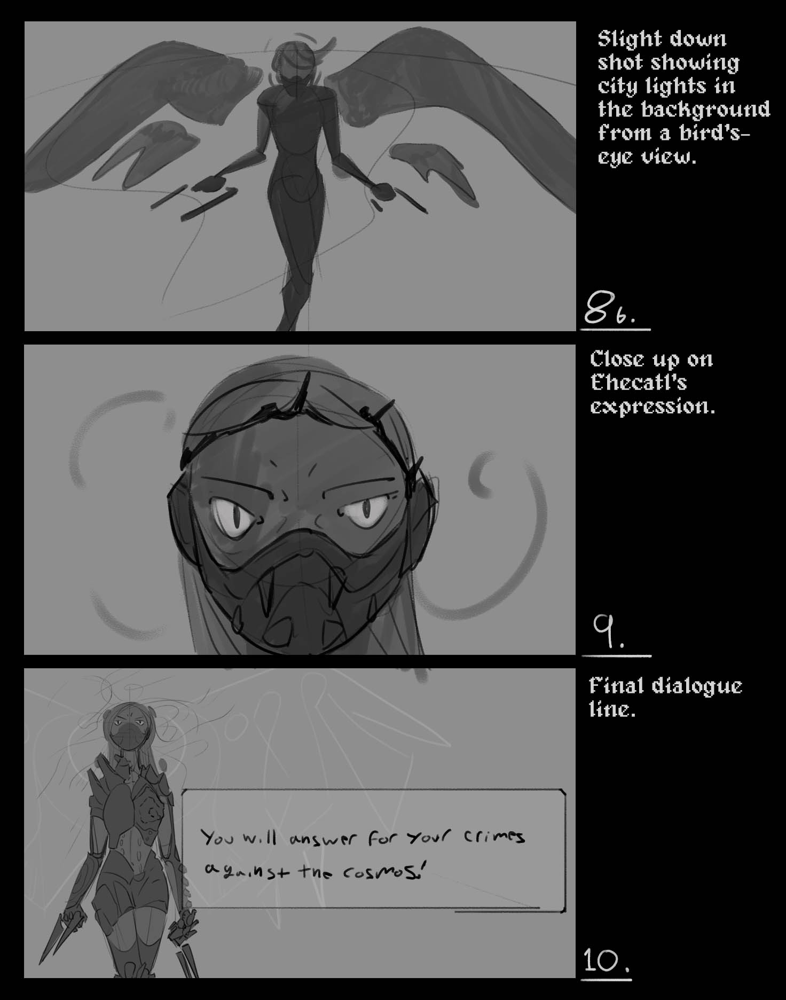
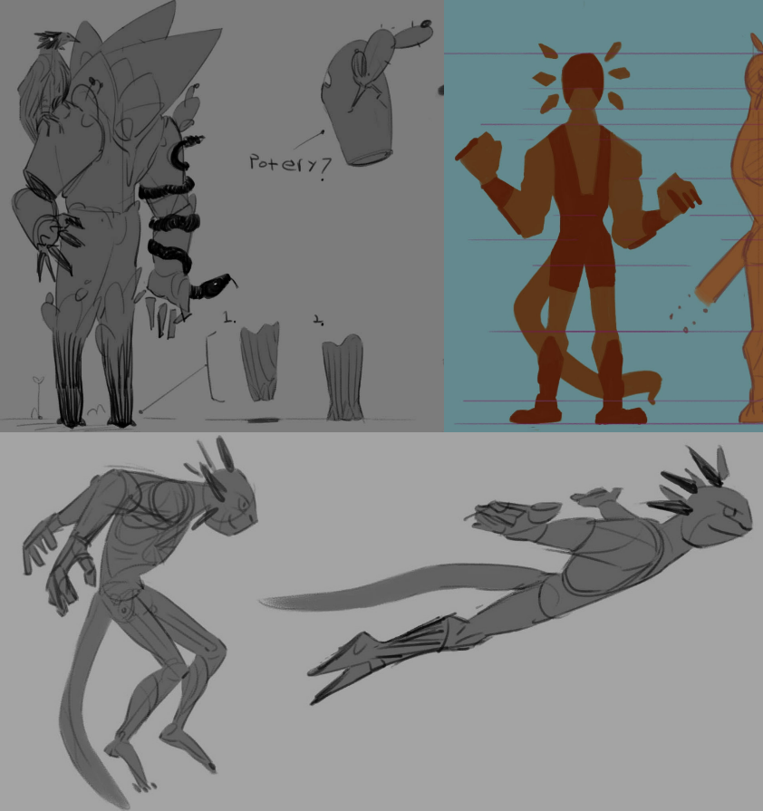

About this prototype: At this stage of production I sought to move through execution across disciplines as quickly as possible, achieving a minimum functioning version of assets to prioritize a cohesive proof of concept piece rather than a final polished product. The focus of the tasks was, in that way, to stand up a pipeline that allows for flexible iteration in the future. The character rig is linked to the Blender animation files such that the geometry and weights can be updated and refined. FBX flies containing the animation and armature data are then exported separately from their corresponding work files and integrated into UE5 where the sequence, timing and camera animation of shots is constructed; the character rig and animation assets can later be re-imported with the same name as the assets in use to replace them without affecting the cinematic sequence data.
A short cinematic video introducing Ehecatl as playable character in a fighting game; her role as the goddess of the wind in the Aztec pantheon, her part in the narrative of the game, and her character essence: a lawful warrior, a divine elemental creator, and a passionate spirit
“Where the wind flows, I can follow.”_ Ehecatl
The featurette is meant to be around 1 to 2 minutes in length. It abstractly follows Ehecatl’s journey from the moment she starts tracking Xolotl, who has escaped through a portal; refusing his help in the creation of the fifth iteration of reality.
In The Underworld Mictlan she scours the barren landscape littered with the bones of the proto-earth’s inhabitants. Following nearly imperceptible pressure differentials and microscopic currents of air flow she finds the entrance to the wormhole and arrives ashore in front of the sea facing cliffs on the outskirts of Can-Avac-Micohua; the pocket universe created by Xolotl where death does not exist, the eternal city.
The creation myth of the Aztecs centers around the birth of the Fifth Sun, representing a new era and yet another attempt at creating the mortal world. Each era or iteration of reality is associated with a sun, the one we are currently living in being the fifth one.
Two things had to happen for the current era to get underway. Firstly, one of the gods had to jump into a fire to become the sun, this ends up being Nanahuatzin who jumped ahead of the chosen nobler god when the latter faltered in his resolve. Secondly, Xolotl and Quetzalcoatl had to retrieve the bones of the previous inhabitants of reality from Mictlan, the underworld, and then sacrifice themselves, along with the rest of the gods, in order to grant movement to the newly created sun. In some versions, Ehecatl the god of the wind, takes it upon himself to slay all the other gods. Xolotl, fearing for his life, escapes. Xolotl turns himself into a corn plant, then a maguey plant and finally an axolotl. But, eventually Ehecatl catches up, and slays him.
The adapted narrative for this fighting game takes place during that time where everything is in place except the movement of the sun.
Cultural drivers:
The Messoamerican mythological pantheon is a rich source of novel story lines and ideas that, not unlike those of other ancient cultures, offer a powerful reagent for representation. The narrative of this game is a celebration of both Latin American culture and the intersectional influence of Fighting games in Latin American video game culture.
Ehecatl as a character:
Ehecatl is depicted as male in the original source material. The decision was made to depict the force of nature that is the wind as female to introduce a measure of gender balance to a story whose conflict would otherwise center around two male characters. Ehecatl is, like Xolotl and a number of other gods, an aspect of Quetzalcoatl. Ehecatl also features in other mythological stories, most notably as the father of the folk demigod hero Tepetlachani, born of the mortal princess Mayahuatzin. This makes for the emergence of an interesting dynamic to the adapted depiction of the character who retains the warrior-lover role of the original and seeks to explore a nuanced take on what the female version of that can responsibly be. [Community research needed on this front]
Logline: Xolotl, guide of souls into the underworld, escapes his divine responsibilities to fight in the lucha libre ring.
In the aftermath of the end of reality, the gods gather a fifth time to create the universe anew. In a twist of fate Nanahuatzin becomes the Fifth Sun, and Quetzalcoat, returning from The Underworld with the bones of the perished earth’s inhabitants, discovers that his brother Xolotl is no longer with him. Xolotl has used the essential life force he’d otherwise need to create the Arrow of Time and grant movement to the sun, to instead hide within a pocket universe; superimposed on the static timeless space at the end of the fourth iteration of reality.
Ehecatl, goddess of the wind, is entrusted with the task of bringing him to justice to answer for his crimes. She finds him among mortals (who are rendered immortal by the absence of entropic principles), fighting in the ring disguised as an amphibian; an Axolotl. As news travels across the cosmos, the gods are drawn to engage in a legendary contest of skill and cunning where death has no meaning and personal choices define legacies, revealing the underlying creative and emotional conflict between the forces responsible for the emergence of the universe and humanity.
Character Rig:
A 3D model of Ehecatl sculpted from a base mesh, featuring armor pieces and wings. Textured with base colors in a cell shaded style. Rigged using rigify-aided workflows.
Custom Animations:
Animation sets for attacks and acting body mechanics in accordance to storyboarded shot-specific needs.
Environment and Sets:
Environment assets will consist initially of blocked gray boxed geometry and chosen assets from the Quixel Megascans library in Unreal. To be replaced later in production with stylized, finished versions of the same assets; textures and geometry edited using Quixel Mixer and Blender sculpting tools.
UI dialogue graphics & Text:
Ehecatl’s dialogue lines to be displayed at key moments within a `UI` box showing 2D art of the character, allowing for character and narrative development concerning Ehecatl’s state of mind, inner dialogue and motivations.
Music:
A portion or a modified version of the track El Viento by Argentine rock band Los Espiritus creates the musical atmosphere.
Polish Phase: Refinement of assets and continued development in the polish phase is projected to be carried out thrughout 4 to 5 months of concentrated work alongside ongoing university studies in Computation Arts. Following are specific production goals asociated to their corresponding disciplines.
Animation:
- Refine animation clips. Add breakdowns, define contacts, refine arcs and timing. As well as animating secondary motion of wings and body weigh
- It is not out of the question to create and incorporate new clips into additional shots and sequences in order to enhance existing ideas and actions.
Character Art / Tech Art:
- Refine character model and armor. Sculpt high resolution details where needed, high-poly hard surface modeling for existing armor pieces, and add missing pieces in compliance with design.
- Refine armature rig. Polish weight painting and bone influence on geometry, implement armor piece tweaking controls. Add face controls.
- Create cell shaded materials for armor and skin.
Environment Art / Tech Art:
- Use UE5 terrain workflows to create large expanses of mountains and rock surface.
- Edit and refine Megascans assets (geometry and textures) to create a cohesive stylized look. To be done using qixel mixer and Blender where needed.
- Create a stylized water shader and splash VFX.
- Generally improve the layout of environment elements to support design and composition principles.
UI Design:
- Visual polish on dialogue screens and text reveal effect.
lighting:
- Implement progressive lighting change to emphasize suggested progression across large distances of time and space.
- Refine for best possible aesthetic effect.
Cinematic Design:
- Refine framing and pacing of shots.
- Implement post processing effects to enhance visual polish overall.

   
As secondary objectives of production, time can be allocated to continue conceptualizing and prototyping new characters. And to the expanded development of narrative design aspects of the game.
That can take the form of concept art, storyboard and 3D prototypes of stages, places and backstory sequences. However, producing the finished featurette focusing on Ehecatl is priority one as the current scope stands.
About this prototype: WIP character head sculpt made in Blender, character rigged using the Rigify plug-in and animated using the Action Editor and Non-Linear Animation tracksc to export FBX animation assets for use in engine. Body base mesh and proportions modeled by Zacharie Béliveau.
Website by
Leo